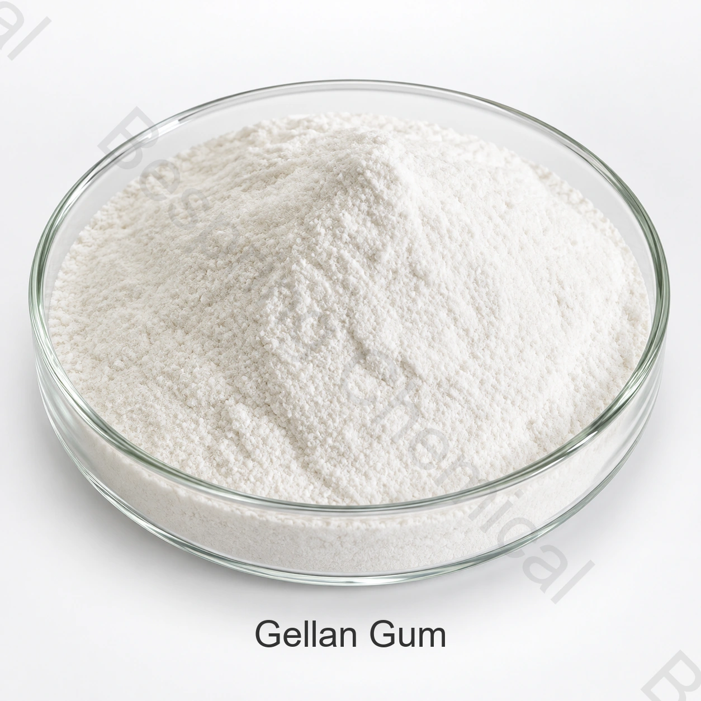

ต้องการระดับความชื่นชอบและการทดสอบ
สําหรับการขยายตัวของผู้ผลิต, ระบุวิธีการปรับโครงสร้างต่ําหรือสูง, อนุภาค ขนาดจํากัดจุลภาค และใบรับรองที่จําเป็น
วัตถุดิบเกรดอาหาร · ไฮโดรคอลลอยด์ สารก่อเจล และสารคงตัว · E418
เหงือกเจลแลนระดับอาหาร เป็นไฮโดรคอลลอยด์ที่หมักได้ จัดหาใน เกรดต่ํา และคุณภาพสูง สําหรับระงับการก่อตัวของเจล และการควบคุมเนื้อผิว

Product image esche และ Package เมื่อมีการเรียงลําดับ
แบ่งปันโปรแกรม จํากัดความสําคัญ วิธีการทดสอบ ปริมาณ แพ็คและปลายทาง
ขอบเขตการขยายภาพKosher, Halal และ ISO เอกสารตามคําขอ
การบรรจุรายการอ้างอิง25 กิโลกรัม ถุงกับสายเสียง PE; กลองหรือลูกค้า requested ชั้นนอกแพ็ค
การโหลดตัวบรรจุยืนยันการโหลดรายการที่เลือก
หลักฐานตรงกันการระบุและ COA ตามคําขอ
ภาพรวมของโปรดักต์
เจลแลนกัมเกรดอาหารเป็นพอลิแซ็กคาไรด์มวลโมเลกุลสูงที่ผลิตด้วยการหมักควบคุม เกรดอะซิลต่ำโดยทั่วไปให้เจลแน่นและเปราะกว่า ส่วนอะซิลสูงมักให้เนื้อนุ่มและยืดหยุ่นกว่า สมรรถนะสุดท้ายขึ้นกับเกรด ไอออน ของแข็ง pH และกระบวนการ
การ กําหนด วิธี การ และ วิธี การ ที่ ใช้ กัน อยู่ ใน ปัจจุบัน นี้ จะ ควบคุม การ ทํา การ ค้า แต่ ละ ราย.
รายการการเกิดขึ้นอีก
เมื่อ เทียบ ระดับ ที่ เสนอ ให้ แล้ว วิธี การ ทดสอบ และ ข้อ เรียก ร้อง ใน การ ทํา โปรแกรม ก่อน ที่ จะ ขอ ตัว อย่าง หรือ วาง ระเบียบ.
สําหรับการขยายตัวของผู้ผลิต, ระบุวิธีการปรับโครงสร้างต่ําหรือสูง, อนุภาค ขนาดจํากัดจุลภาค และใบรับรองที่จําเป็น
เกรดต่ําและสูง ไม่เปลี่ยนกันได้ นิยามเนื้อเรื่อง การหยุดงานและระบบไอออน
ถามสําหรับการทดสอบการระงับ ในน้ํากรดจริง แก้วพืชหรือเครื่องดื่มที่บรรจุแร่
รวมปริมาตรประจําปี, 25 kgggs เลือกแพ็ค, แพเล็ต, พอร์ตปลายทางและความต้องการตัวอย่าง หรือการทดสอบนักบิน
การตรวจสอบโปรแกรม
การเลือกโปรแกรมขึ้นอยู่กับการอนุญาตทางตลาดปลายทาง และการทดสอบอาหารเสร็จสิ้น
รองรับการระงับการทํางานระยะยาวและความมั่นคงทางสายตา เมื่อระบบระดับชั้นและระบบการทํางานถูกเลือกอย่างถูกต้อง
การ ทํา เช่น นี้ อาจ ช่วย ลด การ ขาด แร่ ธาตุ, เส้นใย, หรือ โกโก้ ขณะ ที่ จัด การ เรื่อง การ แยก กัน อยู่ และ การ ดื่ม.
สามารถสร้างเจลที่เสถียรในแนวความคิดแบบลดน้ําตาลหลัง pH, การทดลองของแข็งและไอออน
ให้ การ พัก ผ่อน, โครง สร้าง, หรือ เนื้อ เยื่อ ที่ ยืดหยุ่น ได้ ใน ระบบ นม ที่ เข้า กัน ได้ และ ของ หวาน.
ตัวเลือกที่ต่ําและใหญ่จะทําให้ความยืดหยุ่น, ความยืดหยุ่น และโพรไฟล์ที่ปล่อยออกไปได้แตกต่างกันไป
เพิ่มค่าร่างกายและเสถียรภาพ โดยมีระดับการใช้ต่ํา หลังจากการตรวจสอบสูตร
ข้อกําหนดการค้า
ข้อกำหนดอ้างอิงทางการค้านี้แยกจาก COA รุ่นผลิตและกฎระเบียบ ต้องตกลงเกรด ฐานวิเคราะห์ และวิธีทดสอบสำหรับคำสั่งซื้อ
ปัดหรือใช้แป้นพิมพ์เพื่ออ่านทุกคอลัมน์
| รายการทดสอบ | คัม ต่ํา | กามเทพอะซิล เกลลัน |
|---|---|---|
| รูปลักษณ์ | ผงไม่มีสีขาว | ผงไม่มีสีขาว |
| รัศมี | 85.0-108.0% | 85.0-108.0% |
| pH | 5.0-8.0 | 5.0-8.0 |
| ความสามารถชั่วคราว | ผ่าน | ผ่าน |
| ความแข็งแกร่งของเกล | ≥850 g/cm² | ≥400 g/cm² |
| อิโซปานอล | ≤750 mg/kg | ≤750 mg/kg |
| ทดสอบการแสดงตัว | ผ่าน | ผ่าน |
| การ สูญ เสีย เมื่อ แห้ง | ≤15.0% | ≤15.0% |
| 60 เมช พาส พาส | ≥92% | ≥92% |
| ตะกั่ว (เช่น pb) | ≤2 mg/kg | ≤2 mg/kg |
| เฮฟ วี เมทั ล (เช่น Pb) | ≤20 mg/kg | ≤20 mg/kg |
| Asssicic (A) | ≤2 mg/kg | ≤2 mg/kg |
| แคดเมียม | ≤1 mg/kg | ≤1 mg/kg |
| ปรอทรวม (hg) | ≤1 mg/kg | ≤1 mg/kg |
| จํานวนจานทั้งหมด | ≤10,000 CFU/g | ≤10,000 CFU/g |
| ผงและยีสต์ | ≤400 CFU/g | ≤400 CFU/g |
| ไวยากรณ์ | ≤30 MPN/100 g | ≤30 MPN/100 g |
| แซลมอนเลล่า | ไม่พบใน 10 g | ไม่พบใน 10 g |
บันทึกย่อพิเศษ: ช่อง “ความบริสุทธิ์85.0-108.0%” ทางการค้าเปรียบเทียบตรงกับการวิเคราะห์ของ JECFA ที่แสดงผ่านผลได้คาร์บอนไดออกไซด์ไม่ได้ ต้องระบุปริมาณที่วัด วิธี และรูปแบบอะซิลในข้อกำหนดที่ลงนาม เจลแลนกัมเป็นพอลิเมอร์ที่แปรผัน สูตร C40H68O38 จึงไม่ใช่สูตรโมเลกุลตายตัวของผลิตภัณฑ์
การเลือกเชิงเทคนิค
เลือกแบบอะไซล์ต่ํา สําหรับอาการของเจลที่แข็งแรง/แข็งตัว หรือแบบเส้นเอ็นสูง สําหรับเนื้อที่นุ่มกว่า/หิน
แบ่งปันแคลเซียม โซเดียม โพแทสเซียม พีเอช ส่วนประกอบที่ลดความร้อน และสภาวะกระบวนการทําความร้อน
จัดวางเจลเสริม การระงับและการทดสอบการแข็งตัว ก่อนที่จะเปรียบเทียบตัวอย่าง
ยืนยันว่าเป็นสารละลายที่ฝังตัวได้, โลหะและจุลชีววิทยา จํากัด สําหรับตลาดปลายทาง
การรองรับการจัดอันดับ
ต้องการกําหนดลายเซ็นในปัจจุบัน หรือ TDS, SDS, วิธีการทดสอบ และตัวแทนหรือชุด COA
การตรวจสอบตรวจสอบใช้ Kosher, Halal, ISO และเอกสารรักษาความปลอดภัยอาหาร สําหรับเกรดที่แน่นอน แหล่งที่มาและการผลิตเว็บไซต์
ทบทวน ดู FAO/JECFA กํากับหมากฝรั่งเจเลน สําหรับบริบทประจําตัว แล้วใช้กฏตลาดปลายทางแยกกัน
การจัดเก็บและการจัดการ
คําถามของผู้ซื้อ
ความ เหมาะ สม, การ ใช้ กฎหมาย และ การ ใช้ ยา ปฏิชีวนะ ต้อง ได้ รับ การ ยืน ยัน สําหรับ อาหาร สําเร็จ รูป และ ตลาด ปลาย ทาง อย่าง ถูก ต้อง.
เจลแลนกัมระบุด้วย CAS 71010-52-1 และ INS 418 โดย Codex GSFA ปัจจุบันระบุ 418(i) โปรดยืนยันเกรดที่จัดหาจริงและกฎตลาดปัจจุบัน
ปริมาณสั่งซื้อขั้นต่ำอ้างอิงคือ 500 kg ต้องยืนยันความพร้อมของตัวอย่าง การทดลอง และการจำหน่ายเชิงพาณิชย์สำหรับเกรดที่เลือก
25 กิโลกรัม ถุงอ้างอิงพร้อมสาย พีอี; กลองหรือลูกค้าที่เรียกเก็บภายใน. ยืนยันสาย, palet, เครื่องหมาย และสินค้าบรรจุสินค้าในปากกระบอก.
การตั้งค่าโปรแกรมอาหาร, วิธีกําหนดเป้าหมาย และวิธีการทดสอบ, ปริมาณ, อนุภาค หรือค่าระดับความชอบ, ปลายทาง, สิ่งที่ต้องการ Pallet, ใบรับรอง และวันที่ร้องขอการส่ง
การจัดหาที่อิงข้อกำหนด
แบ่งปันใบสมัคร, เกรดเป้าหมาย และปริมาณ, แพ็ค, จุดหมาย และเอกสารที่ต้องใช้ สําหรับข้อเสนอที่ต้องใช้จํานวนมาก
บอกเราถึงตลาดเกรดและปลายทางของคุณ เราจะได้ยืนยันได้ว่าเอกสารไหน ที่สั่งได้
การอ้างอิงภายนอกไม่ใช่ใบรับรองชุดหรือค่าผลิตภัณฑ์ของเบสปริง